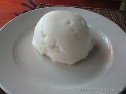

Photo description: Xima served and ready to be eat
Xima Also known as upshwa, xima is one of Mozambique's most popular dishes. Kind of heavy and a little tricky to eat without a good sauce. The xima is part of that food group that saved many families in times of famine. Super simple and cheap, you won't need to go shopping to prepare it..
Shall we learn to prepare?
Ingredients you will need
How to prepare Xima ?
Thats it!! I hope you enjoyed it